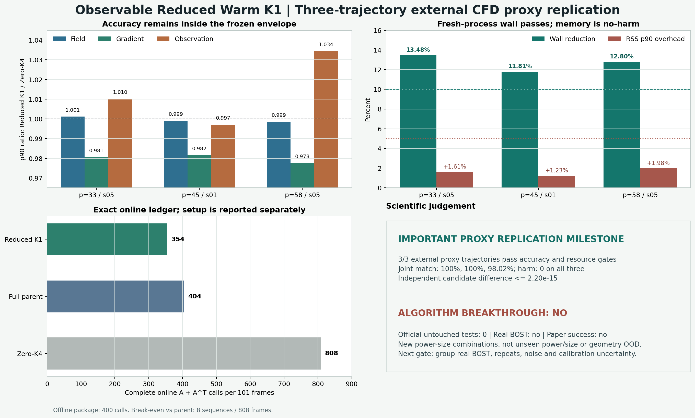

{kind=link}
严格判决
代理层复现通过，算法突破仍为否
“通过”限定在公开 PoolFire straight-ray CFD proxy 和冻结的兼容包络内；三条新功率/尺寸组合不能升级成 unseen-power、unseen-size、geometry OOD 或独立实验数据。
重要里程碑：PASS_EXTERNAL_PROXY_REPLICATION
三条轨迹都完成 101 帧预测、逐条通过精度与资源门，并被不同数值路径独立复算。没有一条失败被平均值藏掉。
突破边界：algorithm_breakthrough=false
official confirmatory test 为 0，real_BOST=false，physical_same_accuracy_proven=false，global_generalization_proven=false，paper_success=false。

逐轨迹精度
三条都过门，但 p58 留下两处轻微失配
harm 和 severe harm 在三条轨迹上均为 0。match 是更严格的逐帧非劣判据，因此 p58 的两帧仍必须单独公开。
| 轨迹 | all-frame match | skipped match | field p90 比 | gradient p90 比 | observation p90 比 | harm |
|---|---|---|---|---|---|---|
| p33-s05 | 101/101 | 50/50 | 1.0012 | 0.9806 | 1.0103 | 0 |
| p45-s01 | 101/101 | 50/50 | 0.9992 | 0.9817 | 0.9971 | 0 |
| p58-s05 | 99/101 | 48/50 | 0.9986 | 0.9777 | 1.0345 | 0 |
p58 的 frame 77 与 79：observation-only mild miss
它们超出冻结 match 线仅 0.000846 和 0.004517；field、gradient 仍匹配，也没有越过 harm 线。这解释了为什么 p58 是 98.02% match 但整条 accuracy gate 仍通过。
| 帧 | Reduced observation | Zero-K4 | 冻结容差 | 超出 match 线 |
|---|---|---|---|---|
| 77 | 0.286727 | 0.259892 | 0.025989 | 0.000846 |
| 79 | 0.301481 | 0.269967 | 0.026997 | 0.004517 |
固定方法
50 个奇数帧用 observation residual 代替完整 proposal
模型、rank、ridge、alpha、K1 和评分门都没有在打开外部轨迹后修改。
x_even = K1(y_even, A^T G_theta(y_even)); x_odd = K1(y_odd, h_even + mean_h + U C(y_odd - A h_even - mean_y))
完整成本
在线少 50 次 A^T；离线包要单独摊销
只报 solver iteration 会掩盖 proposal、lift 和 package setup，所以这里把在线与离线分开。
| 101 帧在线方法 | A | A^T | 总调用 | 相对父模型 |
|---|---|---|---|---|
| Observable Reduced Warm K1 | 202 | 152 | 354 | 少 12.38% |
| Full-parent Warm K1 | 202 | 202 | 404 | 基准 |
| Zero-CGLS K4 | 404 | 404 | 808 | 多 100% |
wall 信号稳定
三条 fresh-process 降幅为 13.48% / 11.81% / 12.80%；paired bootstrap 下界均高于 10%，primary 分别在 99 / 93 / 91 次配对中更快。
内存只是 no-harm
RSS p90 ratio 为 1.0161 / 1.0123 / 1.0198，全部低于 1.05，但没有内存下降。不能把 no-harm 写成 memory saving。
离线 setup：200A + 200A^T
按 A 与 A^T 等成本计算，需复用 8 条 101 帧序列、共 808 帧才相对父模型摊平。真实 BOST 上必须重新测 I/O、图像处理和组内 forward，不能照搬这个盈亏点。
独立复算
不同分解路径得到相同候选和判决
正式实现用 thin SVD 与 measurement-space SVD ridge；复核实现改用 sample-space eigendecomposition、field QR 与正规方程 ridge。
| 复核项 | p33-s05 | p45-s01 | p58-s05 |
|---|---|---|---|
| candidate 最大差 | 2.03e-15 | 1.49e-15 | 2.19e-15 |
| metric 最大差 | 2.22e-16 | 2.22e-16 | 1.11e-16 |
| reference 最大差 | 0 | 0 | 0 |
| benchmark 最大差 | 0 | 0 | 0 |
PASS_INDEPENDENT_EXTERNAL_HOLDOUT_RECOMPUTATION_V24
三条 pair 绑定与完整结果树在复核前后未变化；独立验证没有把正式分解结果当作答案再次读取。
原创性边界
组合差异可防守，组件级“首创”不可防守
一级来源核查没有发现与完整组合完全同构的方法，但 warm start、learned Krylov、迭代修正、NeRIF 和 BOST coarse-to-fine 都已有强近邻。
WB-IPM
学习 warm basis，再进入投影/Krylov refinement，是当前最危险的结构近邻。
查看一级预印本Learning to Warm-Start
把网络训练目标与后续固定迭代联系起来，阻断“learned warm start 本身是创新”的主张。
查看 JMLR 官方页Learned ReSeSOp
学习型修正与不精确 forward 的结合，是 inverse refinement 的直接近邻。
查看一级预印本NeRIF 与 Pyramid-BOST
分别覆盖神经隐式 BOST 重建和 coarse-to-fine 初始化，限定 BOST 侧可声称的贡献。
NeRIF 官方页 · Pyramid-BOST 官方页当前可防守表述：面向 BOST 的 observation-conditioned reduced measurement-space proposal，经精确 A^T range lift、observable-only scalar 和未修改 strict CGLS K1，在 field / gradient / observation 同精度包络下按完整算子成本验证。
不能写成 first、全球唯一或 SOTA
截至 2026-07-28 的公开来源未发现完全同构方案，不等于 global_uniqueness_proven；组内未发表工作、专利与实现仍需何远哲师兄核对。
下一科学门
停止追加同类 CFD，转入组内真实 BOST 迁移
再加一条相同 proxy 不会显著提高论文等级。真正能改变结论的是相机、标定、噪声和重复实验。
已经具备
固定方法、Zero-K4 与父模型、三指标包络、完整 A/A^T 账、fresh-process wall、RSS no-harm、三轨迹复现和独立数值复算。
尚缺的决定性证据
组内背景图/流动图或位移场、相机内外参与 ROI、flow-off 重复测量、标定不确定度、真实 forward/adjoint、组内基线和端到端 wall/RSS。
论文升级条件
用重复测量与标定误差定义真实“同精度”，冻结迁移规则后一次性比较 Reduced K1、完整父模型和组内基线。只有真实 BOST 仍逐实验过 field/gradient/observation 或可观测替代门，并保留 wall 优势，才重新评估 algorithm_breakthrough。